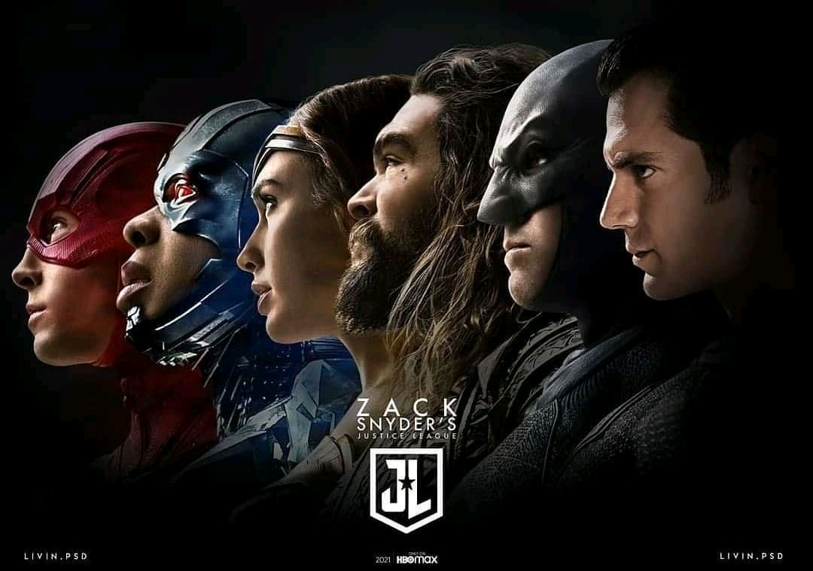

El Universo Extendido de DC (en inglés, DC Extended Universe) es una franquicia de películas y un universo compartido basado en los personajes creados por DC Comics. Al igual que en los cómics, es establecido por distintos eventos como crossovers, elementos comunes en su trama, escenarios, elenco y personajes.
El DCEU ha estado en producción desde el 2013 y en ese tiempo se han distribuido nueve películas.
Películas mas Taquilleras del DCEU
- Aquaman
- Batman v Superman: Dawn of Justice
- Wonder Woman
- Suicide Squad
- Man of Steel
- Justice League 2017
- Shazam
- Birds of Prey
Próximos Estrenos
★ Zack Snyder Justice League ★
Comúnmente conocida como Snyder Cut, es la próxima versión del director de la película, Liga de la Justicia de 2017, basada en el equipo de superhéroes del mismo nombre de DC Comics. Esta versión de 4 horas de duración es la visión original del director Zack Snyder antes de tener que realizar los cambios estipulados por el estudio y posteriormente abandonar la producción en 2017, donde Joss Whedon lo reemplazó y asumió sus funciones. Ω
Estreno 18 Marzo 2021
Zack Snyder's Justice League | Official Trailer | HBO Max
✠ The Suicide Squad ✠

Los convictos encarcelados del Grupo Trabajo X son enviados en una nueva misión de alivio de sentencias a la isla sudamericana de Corto Maltés para destruir Jotunheim, una prisión y laboratorio nazi que albergaba a presos políticos y realizaba experimentos.
Estreno 6 Agosto 2021
The Suicide Squad | Official Trailer
Películas Fuera del Canon del DCEU
| Película | Lanzamiento | Director |
|---|---|---|
| Estrenadas | ||
| Joker | 4 Octubre 2019 | Todd Phillips |
| Producción | ||
| The Batman | 4 Marzo 2022 | Matt Reeves y Mattson Tomlin |
- Joker (2019)☻
- Se pretende que sea la primera de una serie de películas basadas en DC separadas del Universo extendido de DC (DCEU) compartido. La película está dirigida por Todd Phillips a partir de un guion que escribió con Scott Silver, y está protagonizada por Joaquin Phoenix como Joker, junto con Robert De Niro. El Joker, un comediante fallido se vuelve loco y se convierte en un cerebro psicopático criminal.
- The Batman Ⓑ
- The Batman es una película dirigida por Matt Reeves y basada en el personaje creado por Bob Kane y Bill Finger para DC Comics. Su guion fue escrito por Reeves y Peter Craig, y narra los acontecimientos del vigilante Batman durante su segundo año luchando contra el crimen y la corrupción en Gotham City, además de enfrentarse al asesino serial Riddler.
Ir arriba